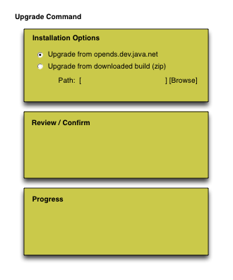

OpenDS Upgrade Tool
Software Design Document
Revision History
| Version |
Author |
Date |
Comments |
| 0.1 |
Kenneth Suter |
2007-03-21 |
Initial Draft |
|
Table of Contents
1.
Introduction
2.
Overview
3.
Design Considerations
3.1
Assumptions and Dependencies
3.2
Goals and Guideline
4.
Architectural Strategies
5.
Upgrade Process Specification
6.
User Interface Specification
7. Unit tests
8.
Feature's
configuration
9. External Impacts
9.1 Impact
on Documentation
9.2 Impact
on Configuration interfaces
9.3
Impact on other subsystems
9.4 Other
external impacts
The purpose of this document is to provide a design for the
OpenDS upgrade tool. The scope of this document covers the
design and implementation of such a tool. The
intended audience is the OpenDS community that will develop, test and
document the tool.
1.1 References
1.2 Glossary
|
Term
|
Description
|
|
base configuration
|
The default configuration of a server associated with a
particular version. The base configuration may change over time
as new configuration elements are added to the servers configuration
with new builds.
|
| install image |
The .zip file containing the server bits obtained from the OpenDS website. |
| transient files |
Files that should not be managed by the upgrade process (e.g. log files). |
|
Given that OpenDS seeks to establish a rich developer
community, it is important to that it be as easy as possible to upgrade
OpenDS install image from one build to a future build. This
functionality will be provided by a tool that allows such a 'one-click'
upgrade feature through either a command-line or GUI interface.
Upgrade processes are ofter complicated an prone to unforseen
conflicts between current and future versions. As such the
upgrade tool will allow the user to revert an upgraded
server either while the upgrade is in progress or
following a completed invocation of the tool.
- It must be possible to revert an upgraded server to a
previous version either while the upgrade is in progress or following a
completed invocation of the tools
- The tool should be capable of downloading the install image for the
new server from the OpenDS web site.
- The tool should be capable of allowing the user to specify
a previously downloaded version of the server since it is possible that
there will not be access to the internet at the installation site.
- The tool should provide both command line and graphical
user interfaces.
The initial goal of the upgrade tool will be to provide a
simple tool that is functional for 'sunny day' scenarios while
providing the capability of allowing the user to back out of the
upgrade process if something goes wrong. Subsequent versions
of the tools may become more sophisticated as requirements and
resources allow.
The benefits of such a tool will be twofold:
- Allow the development community to easily stay on the
cutting edge but supporting a simple upgrade mechanism
- Easily allow production and test servers to be upgraded in
the field
The tool will conform to existing OpenDS command line
and GUI interface design standards.
The upgrade tool will made use of existing OpenDS tools
whereever possible, namely LDAP and LDIF tools that might
prove useful in managing the configuration neccesary configuration
changes. Additoinally existing code from the installer and
command line parsing tools will be reused for the user interfaces.
The upgrade tool will be responsible for updating all components of
the server. There are four primary component areas of the OpenDS
system that must
be considered in performing an upgrade: filesystem bits,
custom configuration, schema, and customizations to the
supporting operating system (e.g. Windows service).
Upgrading filesystem bits is fairly staightforward
disregarding operating system issues with file locking and permissions.
Schema and configuration migration are more challenging in that these
system components are customizable by the user. Currently OpenDS
maintains a copy of the base configuration and schema associated with
the version of the installed server.
In general, the tool will use the following algorithm for upgrading an installation:
- Stop any running processes including the server
- Backup all filesystem artifacts
- Calculate schema and configuration customizations
- Upgrade components
- Apply the configuration and schema customizations to the newly upgraded system's configuration and schema
- Start the server
Each of these steps are described in more detail in the following sections.
5.1 Initialization
During this phase, the upgrade tool may download an install image or
verify the existence of a previously downloaded file in the local
filesystem. Downloading an image may require user specification
of web proxy information.
The upgrade tool may perform tests that may indicate that an upgrade
might fail. For instance checks might be performed to make sure
that all of the files necessary for upgrade (e.g. base configuration
and schema) are present. There might also be known 'flag days'
that would necessitate a warning to the user that the upgrade is not
possible or requires extra work.
5.2 Stop Server
The first step in the upgrade process will the to stop the server as well as any other processes associated with the server.
5.3 Backup
The upgrade tool will make use of the 'jar' command to create an
archive in the /bak directory of the server's installation root.
invoke the system's backup command to perform a full backup of
the server. The target directory for the backup files will be
supplied to the upgrade tool by the user. This backup will be
used in supporting the upgrade tools ability to allow the user to abort
the backup process if necessary.
5.4 Calculate Schema and Configuration Customizations
The upgrade tool will calculate schema and configuration customizations
by
determining the differences between the current installation and
base's configuration and schema. To do this the upgrade tool
will make use of the servers persistence of the base configuration and
schema in the config/upgrade directories.
To determine configuration customizations, the upgrade tool will make use of the 'LDIF diff' tool to compare /conf/config.ldif with /conf/upgrade/config.ldif.<svn rev>.
The output of the LDIF diff tool is an LDIF file describing
changes that will later be applies to the new base configuration once
the upgrade has been performed.
To determine schema customizations, the upgrade tool will look for the presense of the file /conf/upgrade/schema.ldif.current
which indicates that a schema customization has been applied to the
server. If this file is present it will be LDIF diff compared to /conf/upgrade/schema.ldif.<svn rev>
for modifications. Entries in these files contain an
X-SCHEMA-FILE attribute whose value indicates the file to which the
modification will need to be applied. If /conf/upgrade/schema.ldif.current is not present no modifications to the new base configuration's schema will need to be performed.
5.5 Upgrade Components
During this phase of upgrade, the upgrade tool will
- replace files from the local filesystem with those found in the install image
- add new files from the install image to the local filesystem
- remove non-transient files from the local filesystem not appearing in the install image
5.6 Apply Customizations
It should be noted that the server must be off line during an upgrade.
It may not be possible to apply new configuration elements
to the old system since they they may contain attributes not
recognized or allowed by the schema, or the configuration change
validation process may reject them. Conversely, if you attempt
the changes after the server has been upgraded, then the server may not
start because it's missing configuration elements that are required by
the new version. As such, the changes to the server configuration must
always be made with the server offline.
During this phase of the upgrade process, the user interface may
present customization in an iterative way, allowing the user to select
or reject specific customizations before they are applied to the
upgraded server.
5.6 Verify Upgrade
During this phase the upgrade tool will attempt to verify that the
upgrade was successful. At the very least an attempt will be made
to start the server.
Following the upgrade process the user should have the option of
reverting to the old installation. Additionally the user should
be told about the process for reverting the installation should they
decide to do so at a later time after the upgrade tool has finished
execution.
6.1 Command Line Interface
The upgrade tool will support a command line interface which whose
executable file will reside in the top level of the installation root
on the filesystem and be a peer of the 'setup' and 'uninstall'
commands. The will be of the form:
upgrade [OPTIONS]
where OPTIONS are
| Option |
Description |
| -c, --cli |
Specifies a command line upgrade. If not specified the graphical interface will be launched. |
| -f, --file FILE |
Install image previously downloaded from the
OpenDS website. If this option is not present, the upgrade tool
will attempt to download the latest install package from the OpenDS
website. |
| -d, --backupDirectory DIRECTORY |
Filesystem location for the backup files |
| -p, --proxy |
URL specifying the HTTP proxy used for downloading the latest install image from the OpenDS website. |
|
|
6.2 Graphical Interface
The upgrade tool will support a graphical interface which will be equivalent in functionality to the command line interface.

7. Unit Tests
It would be theoretically possible to develop functional tests
that perform upgrade of any server version 0.A to server version 0.B
Currently OpenDS does not have a strategy for testing GUI
components. Unit test should be developed for testing the
command line invocation of the upgrade tool.
8.
Feature's Configuration
The upgrade tool will not maintain a configuration other than
the filesystem resources that it has available to it at the time of
invocation. For instance in order to revert to a previous
version of the server the old bits must be available in the filesystem.
9. External impacts
9.1
Impact on
Documentation
Like other OpenDS tools, complete documentation will need to be
generated regarding the upgrade tool's usage.
9.2
Impact on
Configuration Interfaces
None.
9.3
Impact on
Other OpenDS subsystems
None.
9.4
Other external
Impacts
None.